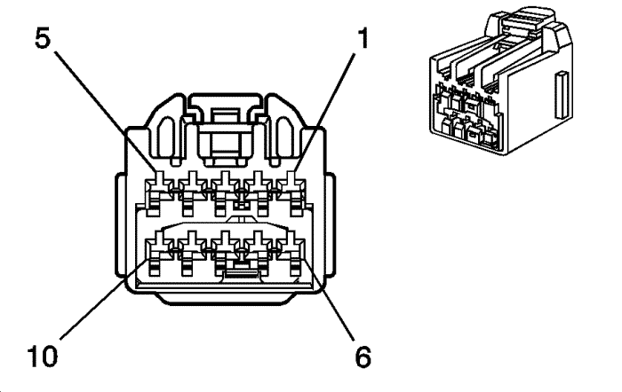
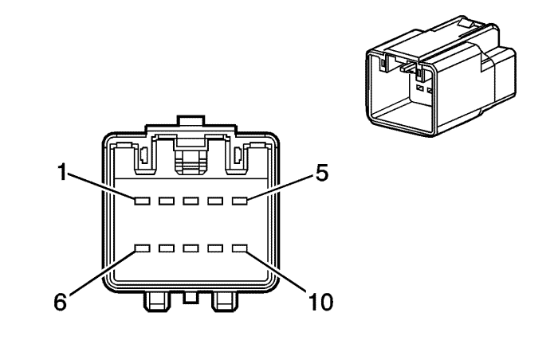

Captiva |
||||||||
|
|
|
|||||||
|
 |
 |
Información sobre la pieza de conexión
| Información sobre la pieza de conexión
|
Pasador | Cable | Circuito | Función | Pasador | Cable | Circuito | Función |
|---|---|---|---|---|---|---|---|
1 | 0.35 WH | 3058 | Señal del sensor de agua en el combustible | 1 | 0.35 WH | 3058 | Señal del sensor de agua en el combustible |
2 | 0,35 BK | 250 | Toma de tierra | 2 | 0,35 BK | 250 | Toma de tierra |
3 | 0.35 PK | 539 | Tensión de encendido 1 | 3 | 0.35 PK | 539 | Tensión de encendido 1 |
4 | 0.35 PU | 3044 | Sensor de presión del filtro de partículas diesel (DPF) Referencia de 5 V | 4 | 0.35 PU | 3044 | Sensor de presión del filtro de partículas diesel (DPF) Referencia de 5 V |
5 | 0,35 BK/WH | 3037 | Sensor de presión del filtro de partículas diesel (DPF) Referencia baja | 5 | 0,35 BK/WH | 3037 | Sensor de presión del filtro de partículas diesel (DPF) Referencia baja |
6 | 0,35 GN | 3034 | Señal del sensor de temperatura de los gases de escape 1 | 6 | 0,35 GN | 3034 | Señal del sensor de temperatura de los gases de escape 1 |
7 | 0,3 5 BK/WH | 3035 | Referencia baja del sensor de temperatura 1 de los gases de escape | 7 | 0,3 5 BK/WH | 3035 | Referencia baja del sensor de temperatura 1 de los gases de escape |
8 | 0,35 GN/BK | 3032 | Señal del sensor de temperatura de los gases de escape 2 | 8 | 0,35 GN/BK | 3032 | Señal del sensor de temperatura de los gases de escape 2 |
9 | 0,35 BK | 3033 | Referencia baja del sensor de temperatura 2 de los gases de escape | 9 | 0,35 BK | 3033 | Referencia baja del sensor de temperatura 2 de los gases de escape |
10 | 0,35 GN | 3064 | Sensor de presión de filtro de partículas diesel (DPF) - señal | 10 | 0,35 GN | 3064 | Sensor de presión de filtro de partículas diesel (DPF) - señal |
| © Copyright Chevrolet Europe. All rights reserved |